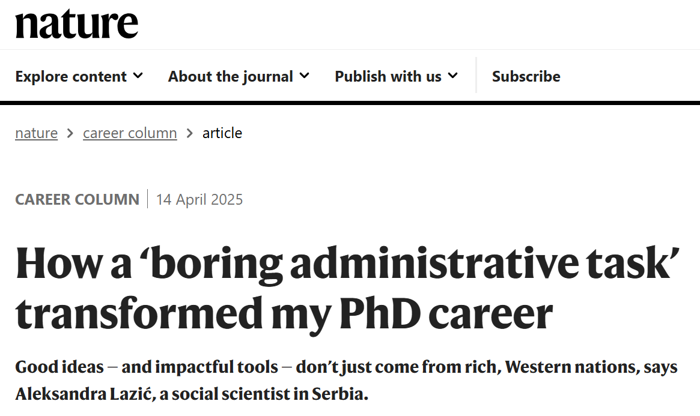

Koordinatorka Zajednice otvorene nauke Srbije, Aleksandra Lazić, objavila je kolumnu u Nature Careers, jednoj od vodećih svetskih platformi posvećenoj profesionalnom razvoju istraživača.

U svojoj kolumni, Aleksandra objašnjava kako je zadatak u oblasti otvorene nauke postao prekretnica na njenom doktorskom putu u LIRA Labu Filozofskog fakulteta Univerziteta u Beogradu. Ističe svoju ulogu u suosnivanju i upravljanju REPOPSI-jem, otvorenim digitalnim repozitorijumom psiholoških instrumenata na srpskom jeziku, i deli praktične savete namenjene istraživačima na početku karijere, posebno onima koji rade u sredinama sa ograničenim resursima, a koji žele da započnu sopstvene projekte u oblasti otvorene nauke.
Kako Aleksandra piše:
„Otvorena nauka ne napreduje kada je sprovode samo oni koji imaju obilje resursa; ona napreduje kada je sprovodi mnogo ljudi, u mnogim sredinama, i na mnogo novih i kreativnih načina.”
Njen prvi savet je da prihvatimo nesavršenost:
„Ako se otvorena nauka sprovodi transparentno, ne mora da se sprovodi i savršeno. Uvek možete da unapređujete u hodu.”
Pročitajte ceo tekst: https://doi.org/10.1038/d41586-025-00944-0
Ako nemate institucionalni pristup, kontaktirajte direktno autorku. Tekst će biti u otvorenom pristupu od oktobra 2025. godine.